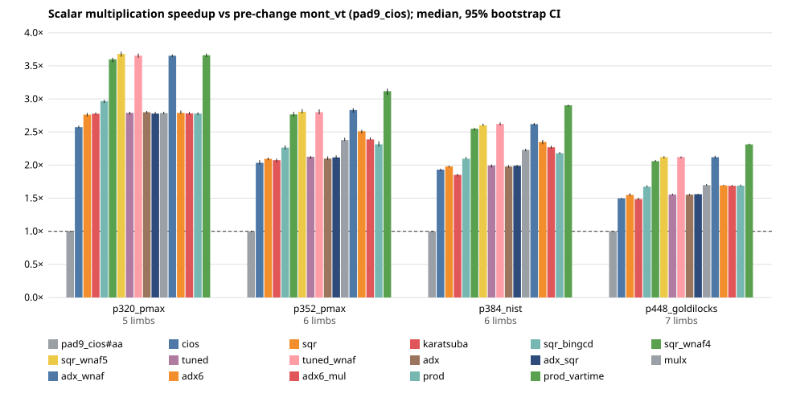
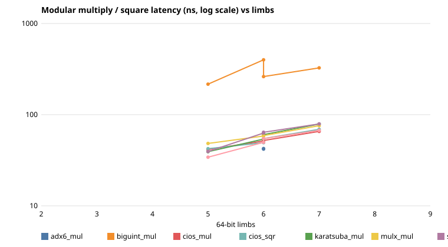
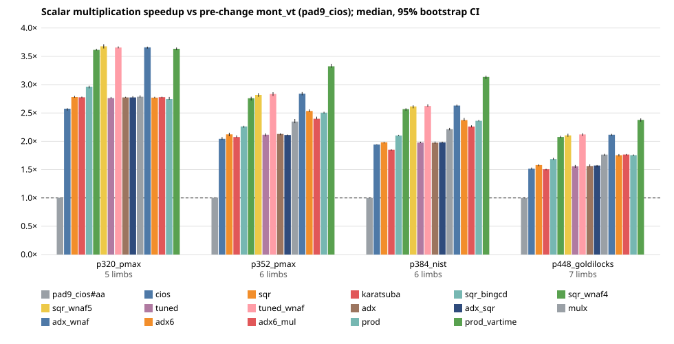

Branch feat/lucid-cray-tckh5e, PR
isogeny-labs/crypto#5309 (follow-up to isogeny-labs/crypto#5209).
Benchmark record
benchmarks/records/20261128T0035Z-adx6-kernel.json. Every
number below is an unverified assertion
[pcc:unverified]: one local host (4-vCPU Intel Xeon @ 2.10 GHz cloud VM,
no PMU, taskset -c 3), no independent replay, not run on
Iso Lab EKS.
src/ecc/mont_vt.rs, mont_mul6_adx)mont_mul4_adx (isogeny-labs/crypto#5209) widened to six
limbs: six unrolled CIOS rows. In each row the low halves of the
mulx products go on the adcx (CF) chain and
the high halves on the adox (OF) chain, then
m = t₀·n0 and t += m·p the same way. After the
reduction the register holding t₀ is exactly zero and becomes the next
row's top word, so the one-word shift is a register rotation.
Six limbs need eight accumulator words (t₀..t₇), plus the
mulx multiplier (rdx), two product halves, a
zero register and three pointers (a, b, and [p₀..p₅, n0]):
fifteen registers. Rust inline asm can name only thirteen general
registers (rbx and rbp are reserved by LLVM),
so the block pushes rbx and rbp, uses them as
accumulators and pops them before it ends. No operand is addressed
through either register, and the block is declared without
nostack. The accumulators rotate through
r8..r13, rbx, rbp (t_j of row i is register (i + j) mod 8).
Result: t₆·2^384 + t < 2p, then one conditional subtraction.
Generated mechanically (six rows × two passes, 340 lines of asm) from the same pattern as the 4-limb kernel; the generator was a throwaway script and is not committed.
ProdAdxKernel (chosen once per scalar multiplication
after the runtime ADX+BMI2 check) now uses mont_mul6_adx
for products and squares at N = 6. Before
it used the mulx-intrinsic CIOS there. Other widths are
unchanged: asm product + tuned squaring at 4 limbs, mulx
CIOS at 7–9, the tuned kernel at 2–3 and 5. Without ADX nothing changes.
This covers Point::scalar_mul and
scalar_mul_vartime on 321–384-bit primes (P-384 among
them).
New benchmark arms: adx6 (asm products and squares at 6
limbs, else ProdAdxKernel), adx6_mul (asm
products, mulx squares), kernel op adx6_mul,
bench field p352_pmax (6 limbs, top bit clear; P-384 has it
set).
mont_mul6_adx equals
a·b·R⁻¹ mod p from num-bigint on 210,525
products over five moduli (2^384 − 317, 2^383 + 231, 2^320 + 5·2^64 + 1,
P-384, 2^384 − 1), operands including 0, 1, p − 1, p − 2 and p/2.adx_and_mulx_match_cios (lib test) now also checks
mul_adx6 against CIOS on P-384 and three more 6-limb
moduli.adx6/adx6_mul included, against the
num-bigint ladder on 38 scalars per field before timing;
all three runs passed.mont_mul_bench --fields p320_pmax,p352_pmax,p384_nist,p448_goldilocks --rounds 41 --batch 30 --kernel-iters 2000000,
seeds 7885634870099998001 (run 1), …002 (run 2), …003 (run 3). Arms
interleaved per round in a seeded shuffled order, the same scalars for
every arm in a round, an A/A copy of the pad9_cios
baseline. Runs 1–2 measured the kernel as an arm next to the 2026-11-25
production; run 3 re-ran after production switched.
| field | run | CIOS | mulx CIOS |
asm 6-limb | asm / mulx | asm / CIOS |
|---|---|---|---|---|---|---|
| p352_pmax | 1 | 51.43 | 58.34 | 41.94 | 0.719 | 0.816 |
| p352_pmax | 2 | 51.35 | 58.88 | 41.79 | 0.710 | 0.814 |
| p352_pmax | 3 | — | 60.98 | 45.79 | 0.751 | — |
| p384_nist | 1 | 52.11 | 58.88 | 42.51 | 0.722 | 0.816 |
| p384_nist | 2 | 54.74 | 60.60 | 45.62 | 0.753 | 0.833 |
| p384_nist | 3 | — | 61.01 | 46.99 | 0.770 | — |
The mulx CIOS probe calls a
#[target_feature] function that is not inlined, so its
standalone latency is worse than in the point code; the end-to-end table
is the one that matters.
k·P, 6
limbs)Derived ratios of paired median speedups (each arm against
pad9_cios, 41 rounds × 30 scalars):
| p352 run 1 | p352 run 2 | p384 run 1 | p384 run 2 | |
|---|---|---|---|---|
adx6 vs previous
production |
1.085× | 1.080× | 1.079× | 1.084× |
adx6_mul vs previous
production |
1.032× | 1.046× | 1.041× | 1.033× |
Run 3 (production now on the asm kernel), same binary:
| p352 | p384 | |
|---|---|---|
production vs mulx arm (=
previous production kernel) |
1.067× | 1.067× |
production vs adx6 arm
(should be 1) |
0.988 | 0.995 |
median ns per
Point::scalar_mul, runs 1/2 → run 3 |
356,138 / 355,454 → 326,115 | 403,263 / 409,239 → 377,914 |
The run-3 paired figure (1.067×) is lower than runs 1–2 (1.08×)
because there the prod arm, which goes through
Point::scalar_mul, measured 0.97–0.99 of the
mulx arm (dispatch and conversion overhead), while the
cross-run production medians fell by 1.07–1.09×. Routing squares through
the asm as well is worth about 4% end to end over asm products
alone.
Controls. At 5 and 7 limbs (p320, p448) the
adx6 arms fall back to the production kernel:
adx6/prod = 1.004, 0.995 (p320) and 1.002,
1.003 (p448) in runs 1/2. The A/A baseline copy is within 0.6% of 1.000
in every run and field.
Graphs: run1/speedup.svg, run1/kernels.svg
(runs 1–2), run3/ (after the switch); copies and PNGs in
benchmarks/20261128-adx6-kernel/.
VALIDATION.json, so no row in
benchmarks/README.md (validation gate).m = t₀·n0 → mulx dependency still serializes rows;
interleaving the next row's products under the reduction is the next
step for both asm kernels.Raw data: raw_run{1,2,3}.jsonl.gz (in Git; the artifact
store refuses this session's AWS identity, CI uploads files under 64
KiB).


